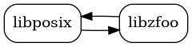
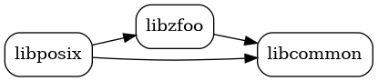
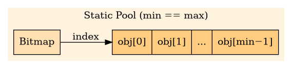
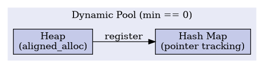

Implementation Details
In many ways, Zephyr provides support like any POSIX OS; API bindings are provided in the C programming language, POSIX headers are available in the standard include path, when configured.
Unlike other multi-purpose POSIX operating systems
Zephyr is not “a POSIX OS”. The Zephyr kernel was not designed around the POSIX standard, and POSIX support is an opt-in feature
Zephyr apps are not linked separately, nor do they execute as subprocesses
Zephyr, libraries, and application code are compiled and linked together, running similarly to a single-process application, in a single (possibly virtual) address space
Zephyr does not provide a POSIX shell, compiler, utilities, and is not self-hosting.
Note
Unlike the Linux kernel or FreeBSD, Zephyr does not maintain a static table of system call numbers for each supported architecture, but instead generates system calls dynamically at build time. See System Calls for more information.
Design
As a library, Zephyr’s POSIX API implementation makes an effort to be a thin abstraction layer between the application, middleware, and the Zephyr kernel.
Some general design considerations:
The POSIX interface and implementations should be part of Zephyr’s POSIX library, and not elsewhere, unless required both by the POSIX API implementation and some other feature. An example where the implementation should remain part of the POSIX implementation is
getopt(). Examples where the implementation should be part of separate libraries are multithreading and networking.When the POSIX API and another Zephyr subsystem both rely on a feature, the implementation of that feature should be as a separate Zephyr library that can be used by both the POSIX API and the other library or subsystem. This reduces the likelihood of dependency cycles in code. When practical, that rule should expand to include macros. In the example below,
libposixdepends onlibzfoofor the implementation of some functionality “foo” in Zephyr. Iflibzfooalso depends onlibposix, then there is a dependency cycle. The cycle can be removed via mutual dependency,libcommon.

Dependency cycle between POSIX and another Zephyr library

Mutual dependencies between POSIX and other Zephyr libraries
POSIX API calls should be provided as regular callable C functions; if a Zephyr System Call is needed as part of the implementation, the declaration and the implementation of that system call should be hidden behind the POSIX API.
Organization and Source Layout of POSIX Options and Option Groups
IEEE Std 1003.1 defines POSIX Options and Subprofiling Option Groups separately. Zephyr usually maps each standard Option Group to a directory under
lib/posix/- for groups such as C extensions that generally do not require OS involvement, andlib/posix/options- for features that generally do require OS involvement.
When an implementation supports an Option Group (or an Option), it is required to define a constant
to indicate support for that Option Group (or Option) for C source files. For example, if the
implementation supports the POSIX_TIMERS Option Group, it is required to define the macro
_POSIX_TIMERS to a specific value. In most cases, the Option Group names and the associated Option
(and macro) names differ by only one character (the prefixing underscore).
However, some Options and Option Groups are intentionally not published as Subprofiling Option Groups because they do not meet the criteria established by IEEE Std 1003.13. Namely, that Subprofiling Option Groups must
have a minimal footprint - to facilitate specialized, embedded, resource-constrained target devices, and
independence - to decouple functionality from other Options and Subprofiling Option Groups.
See also POSIX Application Environment Profiles (AEP) for how Zephyr maps PSE51/52/53 choices onto individual Kconfig options.
For example, the XSI_REALTIME Option Group and the _POSIX_MESSAGE_PASSING depend on other Options or Option Groups (POSIX_DEVICE_IO, POSIX_REALTIME_SIGNALS, etc) and therefore are not qualified to be standard Subprofiling Option Groups.
For simplicity and maintainability, Zephyr organizes such Options and Option Groups the same as
standard Subprofiling Option Groups (at the discretion of the maintainer), under
lib/posix/options/.
The general rule is that Option Groups will always have an associated Kconfig option and some Options (but not all) have an associated Kconfig option in Zephyr. The latter is mostly for maintainability.
Native POSIX Thread Library (NPTL)
Zephyr’s POSIX threading implementation follows the same design philosophy as the
Native POSIX Thread Library (NPTL)
found in glibc on Linux: every POSIX primitive maps 1:1 to a native kernel object. There is no
user-space scheduler or M:N multiplexing layer — each pthread_t is a k_thread, each
pthread_mutex_t is a k_mutex, and each pthread_cond_t is a k_condvar.
![digraph {
rankdir=LR;
node [shape=record, style=filled];
subgraph cluster_posix {
label="POSIX API";
style=filled;
color="#e8f5e9";
fillcolor="#e8f5e9";
pt [label="pthread_t" fillcolor="#c8e6c9"];
pm [label="pthread_mutex_t" fillcolor="#c8e6c9"];
pc [label="pthread_cond_t" fillcolor="#c8e6c9"];
}
subgraph cluster_kernel {
label="Zephyr Kernel";
style=filled;
color="#e3f2fd";
fillcolor="#e3f2fd";
kt [label="k_thread" fillcolor="#bbdefb"];
km [label="k_mutex" fillcolor="#bbdefb"];
kc [label="k_condvar" fillcolor="#bbdefb"];
}
pt -> kt [label="1:1" style=bold];
pm -> km [label="1:1" style=bold];
pc -> kc [label="1:1" style=bold];
}](../../_images/graphviz-4e1471ee9074e10c6c5d9bd042233bdfb200931f.png)
1:1 mapping between POSIX and Zephyr kernel objects
The POSIX types (pthread_t, pthread_mutex_t, pthread_cond_t) are opaque integer handles
whose value is derived from the address of the underlying kernel object in a system-wide pool. The
conversion is performed by to_k_thread(), to_k_mutex(), and to_k_condvar() (and their
inverses) defined in the internal header posix_internal.h.
This 1:1 design means:
No extra scheduling layer — every POSIX thread is a kernel thread (and vice versa)
Kernel-level visibility — debuggers and trace tools see the same objects as the application.
Full userspace support — because every POSIX call bottoms out in a Zephyr system call operating on a kernel object, the entire POSIX API is available to both privileged and unprivileged (userspace) threads. As with everything userspace, it is important to keep in mind that user threads do not have permission on any kernel objects by default.
POSIX is optional - POSIX is entirely optional in Zephyr. However, in order to use POSIX features, it is highly recommended to enable one of the POSIX subprofiles such as
CONFIG_POSIX_AEP_CHOICE_PSE51.
Scheduling Priorities
POSIX and Zephyr order their scheduling priorities in opposite directions. POSIX priorities
are non-negative and numerically larger is more urgent: each policy advertises its range
through sched_get_priority_min() and sched_get_priority_max(). Zephyr’s
native priorities are numerically smaller is more urgent: cooperative threads occupy the
negative values and preemptible threads the non-negative ones.
![digraph zephyr_priority_axis {
rankdir=LR;
node [shape=box, style=rounded, fontname="sans-serif", fontsize=10];
edge [fontname="sans-serif", fontsize=9, arrowsize=0.6];
urgent [label="most urgent\n(POSIX max)", shape=plaintext];
relaxed [label="least urgent\n(POSIX min)", shape=plaintext];
subgraph cluster_coop {
label="cooperative (SCHED_FIFO)";
fontname="sans-serif";
fontsize=10;
style=dashed;
cm [label="-CONFIG_NUM_COOP_PRIORITIES"];
cd [label="…", shape=plaintext];
c1 [label="-1"];
}
subgraph cluster_preempt {
label="preemptible (SCHED_RR, SCHED_OTHER)";
fontname="sans-serif";
fontsize=10;
style=dashed;
p0 [label="0"];
pd [label="…", shape=plaintext];
pn [label="CONFIG_NUM_PREEMPT_PRIORITIES - 1"];
}
urgent -> cm [dir=none];
cm -> cd -> c1 [dir=none];
c1 -> p0 [dir=none];
p0 -> pd -> pn [dir=none];
pn -> relaxed [dir=none];
}](../../_images/graphviz-5914f08c1a4ebe388ef046860f55bb18b6ab83ca.png)
Zephyr’s native priority axis. POSIX priorities map onto it reversed, so the POSIX maximum for a policy corresponds to the most negative (leftmost) Zephyr value in that policy’s band.
The POSIX layer converts exactly once, at its boundary: pthread_setschedparam(),
sched_setscheduler(), and friends map a POSIX priority into the Zephyr band for the
requested policy, and everything below the boundary works exclusively in Zephyr’s native
space.
This is why prioritized I/O orders its ready queue with a min-heap even though POSIX
phrases the ordering as a maximum. aio_reqprio is a non-negative delta that can only
lower a request below its submitting thread - by itself it orders nothing, being relative
to the submitter - so the effective POSIX priority is the thread’s priority minus the
delta, and selecting the next request would take the numeric maximum of those values.
Expressed in Zephyr’s native space the same subtraction becomes
k_thread_priority_get() + aio_reqprio - one Zephyr level per unit, moving right along
the axis above - and the most urgent request is now the numeric minimum. sys_aio keys
its ready heap on that native value paired with a wraparound-safe submission sequence
number, so equal-priority requests complete first-in-first-out, as prioritized I/O
requires.
Sporadic Server Scheduling
The Sporadic Server options (_POSIX_SPORADIC_SERVER and _POSIX_THREAD_SPORADIC_SERVER)
describe the SCHED_SPORADIC scheduling policy, under which a thread runs at a foreground
priority while it has execution budget remaining, is demoted to a background priority
(sched_ss_low_priority) when the budget is exhausted, and has its budget restored through a
queue of pending replenishment operations scheduled one replenishment period after each
activation.
With the Thread Sporadic Server option
(CONFIG_POSIX_THREAD_SPORADIC_SERVER), Zephyr accepts SCHED_SPORADIC and
validates the sporadic server scheduling parameters, but does not enforce execution-time
budgets: a thread scheduled under SCHED_SPORADIC executes as if scheduled under
SCHED_RR at sched_priority. This deviation is denoted with the
† (obelus) wherever the option is listed. The process-level
option, _POSIX_SPORADIC_SERVER, is reported as unsupported (-1).
The decision not to implement the sporadic server algorithm itself is deliberate:
- Known specification defects.
The replenishment algorithm as specified in IEEE Std 1003.1 contains well-documented defects. Under certain preemption and blocking patterns, a literal implementation of the specified rules produces premature replenishments, allowing a thread scheduled under
SCHED_SPORADICto consume substantially more processor time than its nominal budget — up to the entire processor in the worst case — thereby defeating the temporal isolation the policy is intended to provide. See M. Stanovich, T. P. Baker, A. Wang, and M. González Harbour, Defects of the POSIX Sporadic Server and How to Correct Them, in Proceedings of the 16th IEEE Real-Time and Embedded Technology and Applications Symposium (RTAS), 2010. Corrected variants exist in the literature, but they deviate from the standardized algorithm; an implementation must choose between fidelity to the specification and correct budget enforcement.- Cost imposed on the scheduler hot path.
Budget enforcement requires the kernel to maintain per-thread execution-time accounting, per-thread queues of pending replenishment operations (bounded by
sched_ss_max_repl, with merging logic when replenishments coalesce), and automatic priority switching on budget exhaustion and replenishment. Every context switch, preemption, and blocking operation touches this state. That bookkeeping conflicts with Zephyr’s goals of small, deterministic, low-overhead kernel primitives and would tax all users of the scheduler, including those who do not use the policy.- Limited adoption.
The algorithm is rarely implemented. Linux, FreeBSD, and most embedded and general-purpose operating systems omit
SCHED_SPORADICentirely; conforming applications must already handle its absence or partial support via the standard feature-test mechanisms.- Mature alternatives.
Applications requiring bounded execution or temporal isolation are better served by mechanisms that are already available and better understood:
CONFIG_SCHED_DEADLINEprovides earliest-deadline-first scheduling, the same family of algorithms adopted by Linux in preference to the sporadic server model._POSIX_THREAD_CPUTIME (
CLOCK_THREAD_CPUTIME_ID) permits per-thread execution-time measurement, and together with _POSIX_TIMERS allows an application to implement budget-monitoring policies in user space, with policy decisions (demotion, throttling, logging) tailored to the application rather than fixed by the kernel.
Signal Implementation Details
The POSIX_SIGNALS option group is implemented on top of the
kernel signal API (k_sig_*). Zephyr does not yet conventionally support interrupted or
restarted system calls. As a result, signals are delivered to a thread on its return from a
system call, so a thread that never enters the kernel does not run a signal handler
†.
Note
Efforts to support the standard behaviour (interrupting blocking system calls, with
EINTR and optional restart semantics) are underway.
abort(), raise(), and signal() are the three functions of the option group that ISO C
also requires, so they must work in a freestanding-plus-ISO-C environment where
CONFIG_POSIX_SIGNALS is not selected. They are implemented once, in the common
C library behind CONFIG_COMMON_LIBC_SIGNAL, and behave identically whichever
standard they are reached through: the calling thread is the same thread in ISO C, POSIX, and the
kernel. When the option group is linked, weak references pick up its signal number table and its
delivery shim, so signal() makes the same kernel registration sigaction() makes and a
disposition installed through either is visible to the other. Without it, only the six signal
numbers ISO C defines (SIGABRT, SIGFPE, SIGILL, SIGINT, SIGSEGV, and
SIGTERM) are reachable, and those coincide with the kernel’s numbering, so handlers take
delivery directly.
Note that only the six ISO C signal numbers can be assumed: a C library is free to number every other signal however it likes, and the numbering shipped with a given toolchain need not match the Linux-aligned numbering used by the kernel and the POSIX option group.
Zephyr does not support processes, which shapes the implementation in several ways:
- No processes
Zephyr has a single process, so a
pid_tis either the value returned bygetpid(), which names the calling thread, or thepthread_tof a specific thread. Sending a signal to a process group is not supported and fails withESRCH.- Dispositions are per-thread
POSIX associates a signal action with the process, but the kernel action database is keyed by (signal, thread), so an action installed by one thread is not in force for another. A thread that needs to catch a signal must install the action itself.
- Kernel threads block all signals by default
A kernel thread must opt in to signal delivery, with
sigprocmask()orpthread_sigmask(), before any signal can be delivered to it. User-mode threads start with no signals blocked, in line with the POSIX specification.- Faults are not signals
A CPU exception or kernel error is reported through the fatal error path rather than by generating
SIGILL,SIGFPE,SIGSEGV, orSIGBUSfor the offending thread.
Elastipool: Elastic Object Pools
Every 1:1 mapping requires a pool of kernel objects from which to allocate. Zephyr uses
elastipool (<zephyr/sys/elastipool.h>) — an elastic object pool that bridges the gap
between guaranteed static allocation and on-demand dynamic growth.
An elastipool instance is parameterized by two values:
min — the number of objects pre-allocated in a static array at compile time (guaranteed to be available, zero-latency allocation via bitmap).
max — the upper bound on total objects. When
max > min, up tomax − minadditional objects may be allocated from the heap (or other desired memory pool) at runtime.
It is useful on larger systems (e.g., those with an MMU) where the exact number of required objects is not known at compile time.
The relationship between min and max selects one of three operational modes:
Static-only pools (min == max)
When min equals max, the pool uses only statically allocated objects. No heap is required.
Allocation and deallocation are O(1) bitmap operations.

Static-only pool (min == max)
This is the most deterministic mode. It is appropriate for safety-critical or memory-constrained systems where heap allocation is undesirable or unavailable.
Dynamic-only pools (min == 0)
When min is zero, all objects are allocated from the heap. A hash map tracks outstanding
allocations so that free and check operations can validate pointers.

Dynamic-only pool (min == 0)
This mode requires CONFIG_SYS_HASH_MAP and CONFIG_SYS_HASH_FUNC32.
Hybrid pools (0 < min < max)
When both min and max are non-zero and max > min, the pool operates in hybrid
(“elastic”) mode. Allocation first attempts the static bitmap; only when the static slab is
exhausted does it fall through to the heap.
![digraph {
rankdir=TB;
node [shape=record, style=filled];
alloc [label="sys_elastipool_alloc()" shape=ellipse fillcolor="#e0f7fa"];
subgraph cluster_static {
label="Static Slab";
style=filled;
color="#e8f5e9";
fillcolor="#e8f5e9";
bmp [label="Bitmap" fillcolor="#c8e6c9"];
slab [label="{obj[0]|...|obj[min−1]}" fillcolor="#a5d6a7"];
}
subgraph cluster_dynamic {
label="Dynamic Allocation";
style=filled;
color="#fce4ec";
fillcolor="#fce4ec";
heap [label="Heap" fillcolor="#f8bbd0"];
map [label="Hash Map" fillcolor="#f8bbd0"];
}
alloc -> bmp;
bmp -> slab [label="index"];
alloc -> heap [style=dashed];
heap -> map [label="register" style=dashed];
}](../../_images/graphviz-da0aefebd5bf176565048aa945158042ad800185.png)
Hybrid (elastic) pool (0 < min < max)
This mode gives the best of both worlds: guaranteed availability of the first min objects with
the ability to allocate up to max.
In the threading subsystem, the pools are instantiated in zephyr/lib/os/thread.c:
K_MUTEX_ARRAY_DEFINE(sys_mutex_pool, SYS_THREAD_MUTEX_MIN);
SYS_ELASTIPOOL_DEFINE_ADVANCED(mutex_pool,
sizeof(struct k_mutex), __alignof(struct k_mutex),
SYS_THREAD_MUTEX_MIN, CONFIG_SYS_THREAD_MUTEX_MAX,
mutex_pool_heap_alloc, sys_mutex_pool, static);
Distributed Kconfig
A recurring problem in embedded systems is knowing at compile time how many of a given resource the final application will need. Different subsystems, libraries, and tests each require some number of mutexes, threads, stacks, etc.
Zephyr solves this with distributed Kconfig variables: each subsystem declares its own
CONFIG_SYS_THREAD_<POOL>_MIN_ADD_<SUBSYSTEM> symbol that contributes to the total minimum
pool size. At build time, CMake sums all _MIN_ADD_* contributions together with the base
CONFIG_SYS_THREAD_<POOL>_MIN value and emits a single SYS_THREAD_<POOL>_MIN compile
definition.
![digraph {
rankdir=LR;
node [shape=rect, style="filled,rounded"];
app [label="Application\nCONFIG_SYS_THREAD_MUTEX_MIN=2" fillcolor="#c8e6c9"];
test [label="Test suite\n_MIN_ADD_TEST=4" fillcolor="#bbdefb"];
lib [label="Library\n_MIN_ADD_MYLIB=1" fillcolor="#ffe0b2"];
sum [label="CMake\nΣ = 2 + 4 + 1 = 7" shape=ellipse fillcolor="#f3e5f5"];
def [label="SYS_THREAD_MUTEX_MIN=7" fillcolor="#d1c4e9"];
app -> sum;
test -> sum;
lib -> sum;
sum -> def;
}](../../_images/graphviz-5dc78cb57374fd3b7cb66a367a16800fb2e009f3.png)
Distributed Kconfig aggregation for SYS_THREAD_MUTEX_MIN
The aggregation is performed by this CMake loop in zephyr/lib/os/CMakeLists.txt:
foreach(_pool CONDVAR MUTEX STACK THREAD)
import_kconfig(
CONFIG_SYS_THREAD_${_pool}_MIN_ADD_
${DOTCONFIG}
_sys_thread_${_pool}_min_add_keys
)
set(_min ${CONFIG_SYS_THREAD_${_pool}_MIN})
foreach(_add ${_sys_thread_${_pool}_min_add_keys})
math(EXPR _min "${_min} + ${${_add}}")
endforeach()
zephyr_compile_definitions(
SYS_THREAD_${_pool}_MIN=${_min}
)
endforeach()
The result is a non-CONFIG_ prefixed compile definition (e.g., SYS_THREAD_MUTEX_MIN=7)
that is used to size the static portion of the corresponding elastipool. The CONFIG_-prefixed
_MAX value (e.g., CONFIG_SYS_THREAD_MUTEX_MAX) sets the upper bound.
This pattern has several advantages:
Decentralized — each library or test declares exactly what it needs; no central manifest to maintain.
Additive — contributions are summed, so adding a new subsystem cannot reduce the pool below what existing consumers require.
Extensible — the same
import_kconfig/ sum /zephyr_compile_definitionspattern is already used for file descriptors (ZVFS_OPEN_ADD_SIZE_*) and is expected to expand to other bounded resources in the future.
To add a new contributor, create a Kconfig symbol in your subsystem:
config SYS_THREAD_MUTEX_MIN_ADD_MYLIB
int "Mutexes required by mylib"
default 3
Then set it in your prj.conf or testcase.yaml:
CONFIG_SYS_THREAD_MUTEX_MIN_ADD_MYLIB=3
The build system automatically discovers all _MIN_ADD_* symbols and includes them in the sum.
POSIX Timers
POSIX timers map ~1:1 onto kernel timers: timer_t handles are k_timer objects
allocated from the OS-managed system timer pool (CONFIG_SYS_TIMER), armed at
full tick resolution with the clock-based kernel timer APIs
(CONFIG_TIMER_CLOCK), and validated as kernel objects in user mode - a stale
or foreign timer_t faults instead of corrupting memory.
Allocation. Applications and libraries reserve guaranteed, statically-allocated timers by
defining int Kconfig symbols named CONFIG_SYS_TIMER_MIN_ADD_<NAME>; the build system sums
them with CONFIG_SYS_TIMER_MIN. Up to
CONFIG_SYS_TIMER_MAX (default INT_MAX) timers in total may be created,
the excess allocated dynamically without guarantees; setting the maximum equal to the
accumulated minimum prohibits dynamic allocation entirely. timer_create() reports pool
exhaustion as EAGAIN.
Expiry notification is signal-based (never a callback in interrupt context, so it is
robust for user-mode callers) with POSIX one-pending semantics: at most one expiry signal per
timer is queued at a time, further expiries are accounted as overruns, and
timer_getoverrun() reads the count latched at the most recent delivery,
non-destructively, computed from the exact scheduled-expiry grid (expiries coalesced by
tickless wakeups are counted correctly). SIGEV_THREAD maps onto the kernel’s
function-notification dispatch (see k_timer_notify.fn): each expiry runs the
notification function in a fresh detached thread, as POSIX specifies, spawned by a single
kernel dispatcher woken through a reserved signal number just past SIGRTMAX that
applications can neither send, mask, nor wait on. sigev_notify_attributes are translated
at timer_create() time - stack size and priority are honored, the detach state is
always detached - and the caller may destroy the attribute object afterwards; no
per-timer allocation is made by the POSIX layer. timer_getoverrun() is valid
inside the notification function. The Linux-compatible SIGEV_THREAD_ID extension is
available under _GNU_SOURCE (the sigev_notify_thread_id member carries a
pthread_t value). A NULL evp behaves as POSIX specifies: SIGEV_SIGNAL with
SIGALRM and the timer ID as the value.
Clocks. TIMER_ABSTIME deadlines are honored on both CLOCK_MONOTONIC and
CLOCK_REALTIME; with CONFIG_TIMER_REALTIME (selected by
CONFIG_POSIX_TIMERS), armed absolute CLOCK_REALTIME timers are
re-targeted when clock_settime() moves the wall clock - a forward jump past the
deadline fires the timer immediately, a backward jump defers it. Re-targeting applies to the
initial expiry only; afterwards a periodic timer’s interval continues on the monotonic grid,
matching Linux.
Reduced mode. When signal-based expiry notification
(CONFIG_TIMER_SIGNAL) is unavailable, SIGEV_NONE timers remain fully
functional as time sources, while SIGEV_SIGNAL, SIGEV_THREAD, and
SIGEV_THREAD_ID report ENOTSUP from timer_create() (SIGEV_THREAD
additionally requires the system thread pool, CONFIG_SYS_THREAD with
CONFIG_THREAD_DETACH). All AEP profiles select the signal subsystem.
Migration from earlier releases: CONFIG_POSIX_TIMER_MAX (still reported by
TIMER_MAX and sysconf(_SC_TIMER_MAX)) is no longer user configurable - it is derived
from CONFIG_SYS_TIMER_MAX, which bounds the pool; guaranteed capacity moved
to the distributed CONFIG_SYS_TIMER_MIN_ADD_<NAME> minimum, and
CONFIG_TIMER_CREATE_WAIT was removed because timer_create() no longer blocks.
POSIX Message Queues
POSIX message queues map 1:1 onto kernel message queues: a queue is a k_msgq
object allocated from the OS-managed system message queue pool
(CONFIG_SYS_MSGQ), and mqd_t is a file descriptor naming it. Every
mq_*() call is one system call plus errno translation, so the whole option group is
usable from user mode: no kernel object pointer is ever exposed, and a stale or foreign
descriptor reports EBADF instead of corrupting memory.
Allocation. Applications and libraries reserve guaranteed, statically-allocated queues by
defining int Kconfig symbols named CONFIG_SYS_MSGQ_MIN_ADD_<NAME>; the build system sums
them with CONFIG_SYS_MSGQ_MIN. Up to CONFIG_SYS_MSGQ_MAX
(default INT_MAX) queues may exist, the excess allocated dynamically without guarantees;
setting the maximum equal to the accumulated minimum prohibits dynamic allocation entirely.
Statically allocated queues draw message storage from a fixed per-queue budget
(CONFIG_SYS_MSGQ_BUF_SIZE) and mq_open() reports a geometry that
does not fit as ENOSPC; dynamically allocated queues size their storage to the request and
are not bound by that budget. Queue names are at most
CONFIG_SYS_MSGQ_NAMELEN_MAX characters.
Messages carry a priority and a length. mq_send() orders messages by descending
priority, FIFO within a priority, and mq_receive() reports the priority of the message
it returns along with its actual length - messages shorter than mq_msgsize are delivered
as sent, not padded. Priorities range from 0 to
CONFIG_POSIX_MQ_PRIO_MAX - 1 (reported by MQ_PRIO_MAX).
Descriptors. The access mode and O_NONBLOCK are per open file description, as POSIX
specifies: two descriptors for one queue may differ in both, and mq_setattr() changes
O_NONBLOCK for the calling descriptor alone. A queue persists after its last descriptor is
closed and is destroyed only once it has been unlinked and no descriptor remains; the name is
released immediately by mq_unlink(), so it may be reused for a new queue while the old
one is still being drained. Both timed calls take absolute CLOCK_REALTIME deadlines,
report expiry as ETIMEDOUT, and are distinguished from a non-blocking descriptor’s
EAGAIN.
Notification. mq_notify() supports SIGEV_NONE, SIGEV_SIGNAL,
SIGEV_THREAD, and (under _GNU_SOURCE) the Linux-compatible SIGEV_THREAD_ID. The
registration is armed in the kernel, so the empty-to-non-empty transition is detected
atomically with the send rather than by sampling the queue depth around it; it fires exactly
once and is consumed as it fires, after which a new registration may be armed. Arming while
one is already armed reports EBUSY; removing one that was never armed succeeds, matching
Linux. SIGEV_SIGNAL targets the registering thread until Zephyr gains process support and
delivers si_code SI_MESGQ. SIGEV_THREAD maps onto the kernel’s function
notification dispatch (see sys_msgq_notify.fn): each arrival runs the
notification function in a fresh detached system-pool thread, spawned by a kernel dispatcher
woken through a reserved signal number past SIGRTMAX that applications can neither send,
mask, nor wait on - notification threads for registrations made by user threads run in user
mode, in the registrant’s memory domain, with the registrant’s object permissions.
sigev_notify_attributes are translated at registration time - stack size and priority are
honored, the detach state is always detached - and the caller may destroy the attribute
object afterwards; no POSIX-side state or service thread is involved, so every notification
form works from user mode.
Migration from earlier releases: mqd_t is now an int file descriptor rather than an
opaque pointer, so a failed mq_open() compares against (mqd_t)-1 and descriptors
count against the ZVFS descriptor table
(CONFIG_ZVFS_OPEN_ADD_SIZE_SYS_MSGQ). mq_receive() and
mq_timedreceive() return ssize_t, as POSIX specifies.
CONFIG_POSIX_MQ_OPEN_MAX, CONFIG_MSG_SIZE_MAX, and
CONFIG_MQUEUE_NAMELEN_MAX are no longer user configurable - they derive from the
corresponding SYS_MSGQ bounds.
POSIX Asynchronous I/O
Asynchronous I/O is a thin veneer over sys_aio, an OS-managed pool of asynchronous I/O
requests (CONFIG_SYS_AIO) performed by a dedicated kernel service queue.
aiocb carries the request handle, and every aio_*() call is one system call
plus errno translation - no POSIX-side request state or service thread exists - so the
whole option group works from user mode. Handles are validated by pool membership on every
call: a stale or foreign handle reports EINVAL instead of corrupting memory.
Dispatch. Submission classifies the descriptor once: descriptors with a waitable
readiness condition (sockets, eventfds) are armed on ZVFS_POLLIN/ZVFS_POLLOUT
readiness with a triggered work item over the events their backend registers for
poll(), so no thread parks while a request waits; always-ready descriptors (regular
files - see below), already-ready ones, and offloaded sockets execute directly on the
service queue thread. Operations execute one at a time in completion order
(CONFIG_SYS_AIO_WORKQ_PRIO,
CONFIG_SYS_AIO_WORKQ_STACK_SIZE): a slow operation delays those queued
behind it, the file-system driver runs on the service queue’s stack, and a request whose
readiness regresses between the wakeup and the transfer may briefly block the queue. This
dispatcher is deliberately a small internal seam: a future backend with uniform,
driver-level asynchronous submission can replace it without changing the system call
contract or the POSIX layer above it. Connecting POSIX asynchronous I/O to RTIO is in the early planning stages - RTIO would first need to express operations on
integer file descriptors and file offsets (today its submissions address iodev objects
with no offset field), possibly by way of a posix_devctl()-style uniform device
interface.
As a prerequisite, poll() was taught that descriptors whose backends have no poll
support - regular files, shared memory, message queues, and the standard streams - are
always ready for input and output, as POSIX requires of regular files, rather than failing
with an unspecified error.
Completion is recorded in the request and is sticky: aio_error() reports
EINPROGRESS until the operation finishes, aio_suspend() waits any-of on
per-request completion signals (at most CONFIG_SYS_AIO_WAIT_MAX entries),
and aio_return() reaps the request, returning its slot to the pool. Closing a
descriptor with requests in flight completes them with EBADF: the service queue
re-validates the descriptor’s backing object before every transfer. aio_cancel()
removes armed and queued requests race-free - a claimed request completes with
ECANCELED, wakes waiters, and still fires its notification - and reports
AIO_NOTCANCELED for one already executing.
Notification mirrors the message queue model: SIGEV_SIGNAL generates the signal
kernel-side with an SI_ASYNCIO code (the target is validated at submission, so no
sender permissions apply at completion time), and SIGEV_THREAD runs the notification
function in a fresh detached system-pool thread - in user mode, in the submitter’s memory
domain, when the request was submitted from a user thread. Completion groups back
lio_listio()’s LIO_NOWAIT list notification: each submission joins the group,
and the group’s single notification fires the moment its last member completes, after which
the group destroys itself.
Allocation follows the distributed-minimum idiom shared with sys_thread,
sys_timer, and sys_msgq: CONFIG_SYS_AIO_MIN_ADD_<NAME> contributions are summed
with CONFIG_SYS_AIO_MIN into a statically allocated, guaranteed pool
minimum, with CONFIG_SYS_AIO_MAX bounding the heap-allocated remainder.
AIO_MAX and AIO_LISTIO_MAX derive from those bounds
(CONFIG_POSIX_AIO_MAX, CONFIG_POSIX_AIO_LISTIO_MAX).
aio_fsync() synchronizes data and metadata together: O_DSYNC and O_SYNC are
equivalent.
Prioritization: with CONFIG_POSIX_PRIORITIZED_IO (enabled by default;
selects CONFIG_SYS_AIO_PRIORITY), _POSIX_PRIORITIZED_IO is defined and
the service queue performs ready requests in priority order from a min-heap rather than in
submission order: each request is ordered by the calling thread’s scheduling priority lowered
by aio_reqprio (0 through AIO_PRIO_DELTA_MAX, one Zephyr priority level per unit),
first-in-first-out among equal priorities, for every descriptor served by the request pool.
Scheduling Priorities explains why that ordering is a min-heap in Zephyr’s
native priority space.
When disabled, AIO_PRIO_DELTA_MAX is 0, aio_reqprio must be 0, and ready requests
are performed in submission order.
File System Implementation Details
The POSIX_FILE_SYSTEM option group is a thin layer over
the Zephyr Virtual File System (ZVFS) and, through it, the file system API.
Path, directory-stream, and working-directory operations are ZVFS system calls, so the whole
option group works from user mode when CONFIG_USERSPACE is enabled.
ZVFS is the common waypoint for every file-descriptor consumer. The POSIX file API and the C
library’s <stdio.h> both bottom out in the same ZVFS entry points - fopen() and
open() are two spellings of zvfs_open() - so an application reaches one file system
implementation whichever interface it uses.
![digraph {
node [shape=rect, style="rounded,filled"];
rankdir=TB;
app [label="application", fillcolor="#ffffff"];
libc [label="C library\n(fopen, fread, ...)", fillcolor="#dae8fc"];
posix [label="POSIX file API\n(open, stat, opendir, ...)", fillcolor="#d5e8d4"];
zvfs [label="ZVFS\n(fd table + per-fd vtable)", fillcolor="#ffe6cc"];
fs [label="file system subsystem\n(fs_open, fs_readdir, ...)", fillcolor="#f8cecc"];
backend [label="FatFs / LittleFS / ext2 / ...", fillcolor="#f8cecc"];
app -> libc;
app -> posix;
libc -> zvfs;
posix -> zvfs;
zvfs -> fs;
fs -> backend;
}](../../_images/graphviz-006d073cc57b88008eecd63370531232d38a6834.png)
libc and the POSIX API both reach the file system through ZVFS
The file system is only one of several descriptor types ZVFS multiplexes. Every open descriptor
is a slot in the ZVFS fd table carrying a vtable; a read, write, or ioctl on the descriptor
dispatches through that vtable to the owning backend, so the same read()/write()/
close()/poll() reach a regular file, a socket, an eventfd, or a message queue without the
caller knowing which.
![digraph {
node [shape=rect, style="rounded,filled"];
rankdir=TB;
fd [label="ZVFS fd (K_OBJ_FILE slot + fd_op_vtable)", fillcolor="#ffe6cc"];
file [label="regular file\n(file system subsystem)", fillcolor="#f8cecc"];
sock [label="socket\n(network stack)", fillcolor="#dae8fc"];
efd [label="eventfd", fillcolor="#d5e8d4"];
mq [label="message queue", fillcolor="#e1d5e7"];
fd -> file;
fd -> sock;
fd -> efd;
fd -> mq;
}](../../_images/graphviz-e14650a2f83ef75a9a7ec8569c5497f2f504949d.png)
A ZVFS descriptor dispatches through its vtable to one of many backends
Zephyr kernel caveats
These reflect Zephyr’s single-process kernel model rather than the file system.
- Working directory
The current working directory is a single, process-wide string maintained by ZVFS, matching the POSIX per-process model on a single-process system. Every path operation resolves its argument against it, so relative paths work throughout - including through ISO C
fopen()and POSIXopen(), which share the same ZVFS entry point.chdir(),fchdir(), andgetcwd()read and update it. Resolution is purely lexical:.,.., and repeated separators are collapsed without consulting the file system. On a backend that supports symbolic links (such as ext2) this is a simplification - full POSIX pathname resolution would resolve a..component relative to the target of a preceding symbolic link, whereas lexical resolution collapses it textually.- Temporary files
tmpfile()andtmpnam()are provided by the common C library (CONFIG_COMMON_LIBC_TMPFILE) for every libc, and require/tmpto exist on a mounted file system. ISO C removes thetmpfile()stream when it is closed or at normal program termination; Zephyr runs as a single process with no such termination boundary at which to reclaim it, so the file is left in place - a documented deviation.
Zephyr FS subsystem caveats
Because the POSIX layer is thin, its capabilities track the Zephyr FS subsystem - the
fs_* API and its fs_file_system_t back-end interface - rather than the on-disk features
of any particular file system. The deviations below are gaps in what the subsystem exposes, not in
the POSIX code or the backing file system; when the subsystem grows an operation, the POSIX layer
surfaces it with little or no change.
- No hard links
The Zephyr FS subsystem exposes no hard-link operation, so
link()always fails withEPERM- which POSIX permits for an implementation that prohibits the operation - andst_nlinkis always 1. This is a subsystem limitation, not a file system one: ext2, for example, stores hard links on disk, but the subsystem offers no way to create or count them.- No symbolic links
The subsystem exposes no symbolic-link operations, so path resolution never follows a symlink and stays purely lexical (see Working directory above). As with hard links this is a subsystem limitation, not a file system one - ext2 stores symbolic links on disk, but the subsystem offers no way to create or read them.
- Permission bits are not exposed
The subsystem’s
struct fs_direntcarries no mode bits, sostat()cannot report a file system’s stored permissions even when it has them - ext2 again being the example. It reports a synthesised mode instead: read and search for everyone, plus write unless the mount is read-only.access()andmkdir()follow suit -mkdir()accepts itsmodeargument and ignores it, andaccess()grantsX_OKonly for directories.- Timestamps
File timestamps are surfaced only when the backend records them, gated by
CONFIG_FS_DIRENT_EXT. Where a backend stores no timestamps,fs_utime()returns-ENOTSUP- whichutime()surfaces aserrnoENOTSUP- andstat()reports zero forst_atim/st_mtim/st_ctim. Per-backend behaviour is noted under the file-system-specific caveats below.
FAT-specific caveats
FatFs (the ELM ChaN library behind CONFIG_FAT_FILESYSTEM_ELM) predates and
ignores POSIX naming conventions, which leaks through the abstraction in a few ways worth knowing
when FatFs is the backend.
- Type-name collision with
<dirent.h> FatFs declares its public types with unprefixed names -
DIR,FIL,FATFS,FRESULT- inff.h.DIRcollides with the POSIXDIRfrom<dirent.h>, so a single translation unit cannot include bothff.h(needed to declare aFATFSmount object, for example) and<dirent.h>. Code that mounts a FAT volume and walks directories with POSIXopendir()/readdir()must split those uses across separate translation units, or use thefs_*directory API on the FatFs side. This is a namespacing defect in the FatFs module, not in the POSIX layer, but the POSIX layer inherits the constraint.- Short file names
Without
CONFIG_FS_FATFS_LFN, FatFs is limited to 8.3 short names, sopathconf(_PC_NAME_MAX)reports 12 and longer names fail. Short names are stored upper-cased, soreaddir()returnsFILE.TXTfor a file created asfile.txt.- Coarse, modification-only timestamps
FAT records a single modification time with two-second granularity and no access time, so
st_atimmirrorsst_mtimandpathconf(_PC_TIMESTAMP_RESOLUTION)reflects the coarser value. Timestamp writes additionally requireCONFIG_FS_FATFS_FF_USE_CHMOD.- Non-canonical
errnovalues FatFs maps several conditions onto
errnovalues that differ from the POSIX-preferred spelling: opening a non-directory as a directory reportsENOENTrather thanENOTDIR, and removing a non-empty directory reportsEACCESrather thanENOTEMPTY. Tests that assert these paths accept either spelling.- rename() is not an atomic replace
FatFs
rename()fails withEEXISTwhen the target already exists, rather than atomically replacing it as POSIX requires.
LittleFS-specific caveats
ext2-specific caveats
Among the in-tree backends, ext2 is the notable case where the on-disk format does support the features the Zephyr FS subsystem withholds. The limitations in Zephyr FS subsystem caveats above therefore still apply to ext2, even though the volume itself could satisfy them:
- Hard links are not supported
link()fails withEPERMandst_nlinkis always 1, though ext2 stores hard links on disk.- Symbolic links are not supported
Symbolic links are neither created nor followed, though ext2 stores them on disk.
- Permissions may not be reported accurately
stat()reports a synthesised mode rather than the file’s stored permission bits.